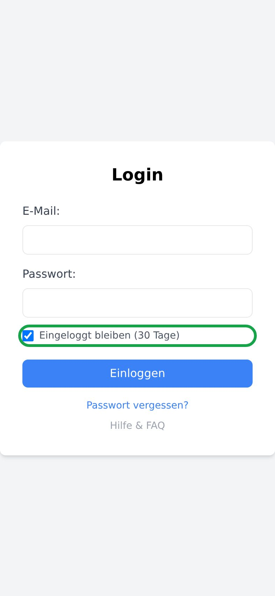
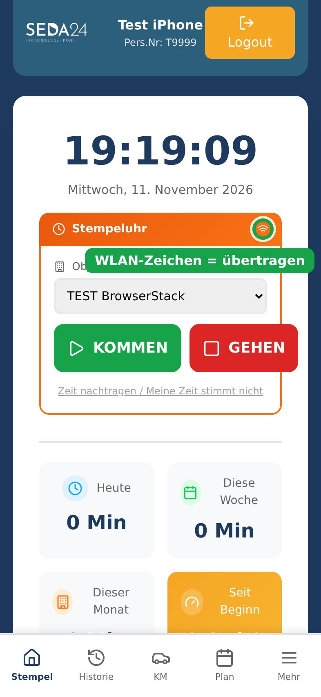
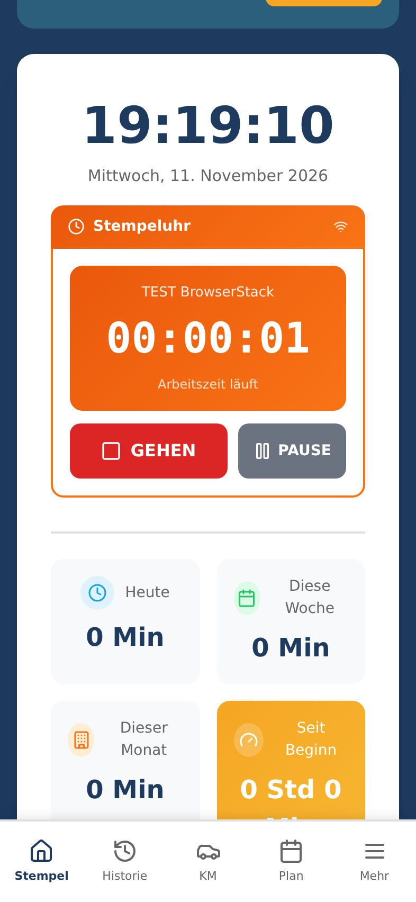
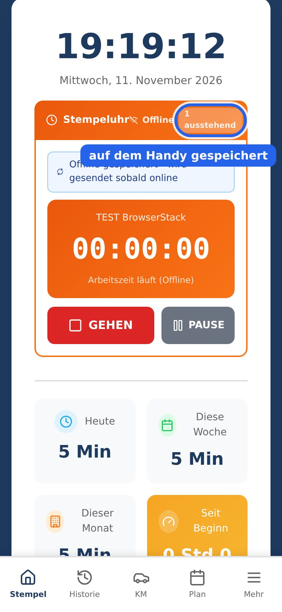
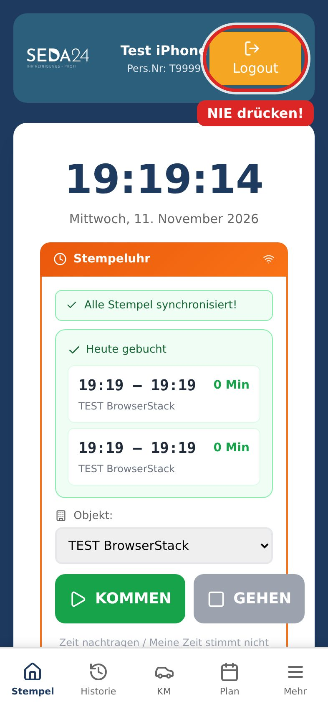
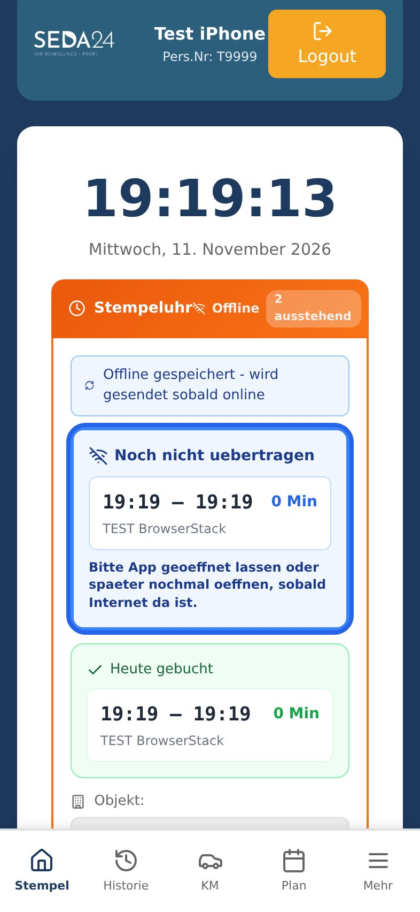
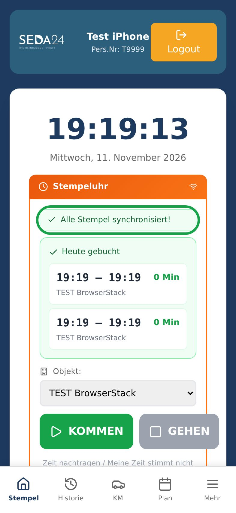

iPhone – so geht's
SEDA24 App: installieren, stempeln, offline




Wische am unteren Rand vom schwarzen Strich nach oben.
Du brauchst keinen Zurück-Pfeil.

Kein Problem. Dein Stempel ist auf dem Handy gespeichert.

